From domestic water supply to deep borewell irrigation and industrial dewatering — SKB has a certified, ISI-marked pump for every need.
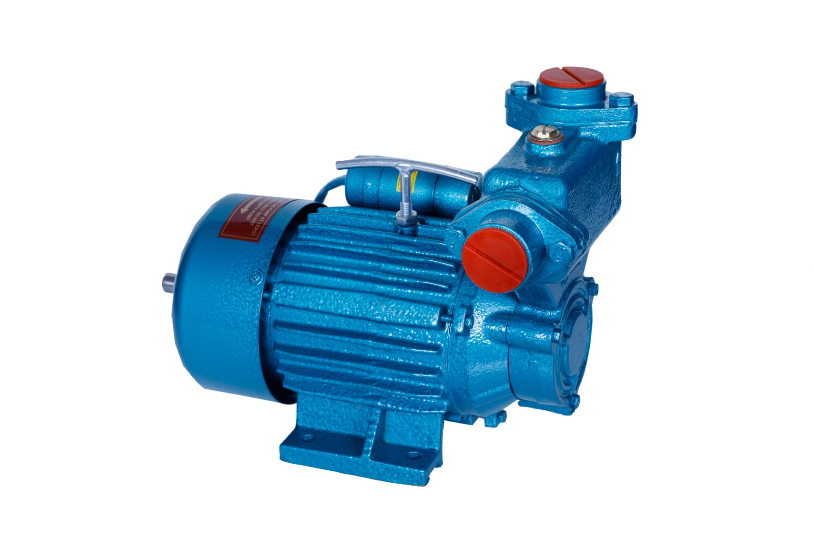
Compact self-priming pumps for water supply, tank filling and industrial applications. No foot valve needed.
Enquire Now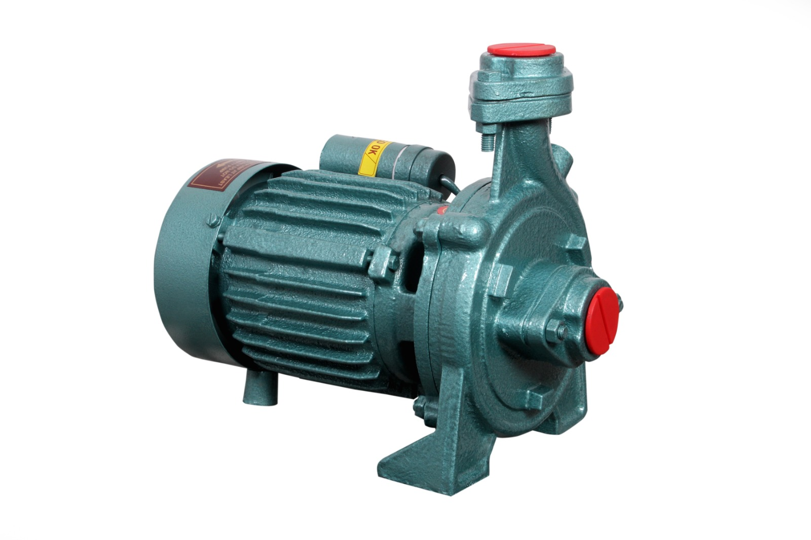
High-efficiency monoblock pumps for domestic water supply, garden irrigation and storage tank filling. 2800 RPM.
Enquire Now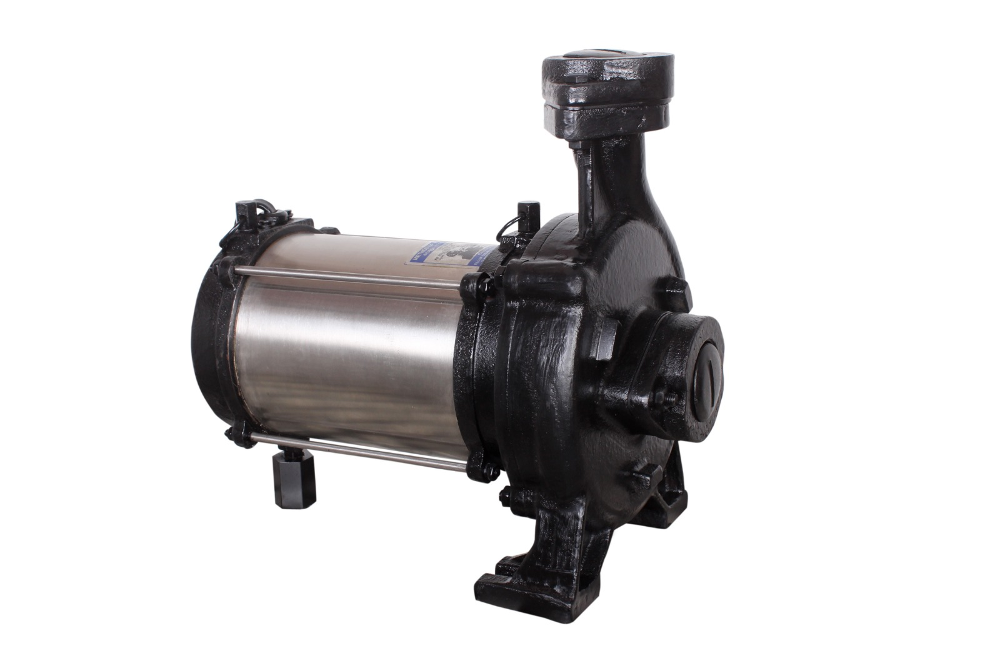
Heavy-duty three-phase monoblock pumps for large-scale water supply, industries and commercial buildings.
Enquire Now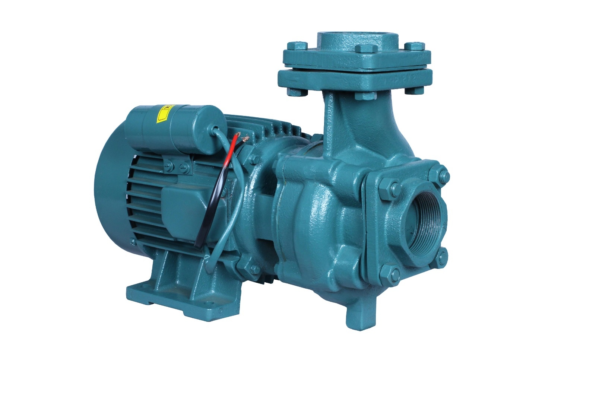
For hotels, gardens, small farms and drinking water supply. Includes pressure gauge, jet assembly and pressure regulating valve.
Enquire Now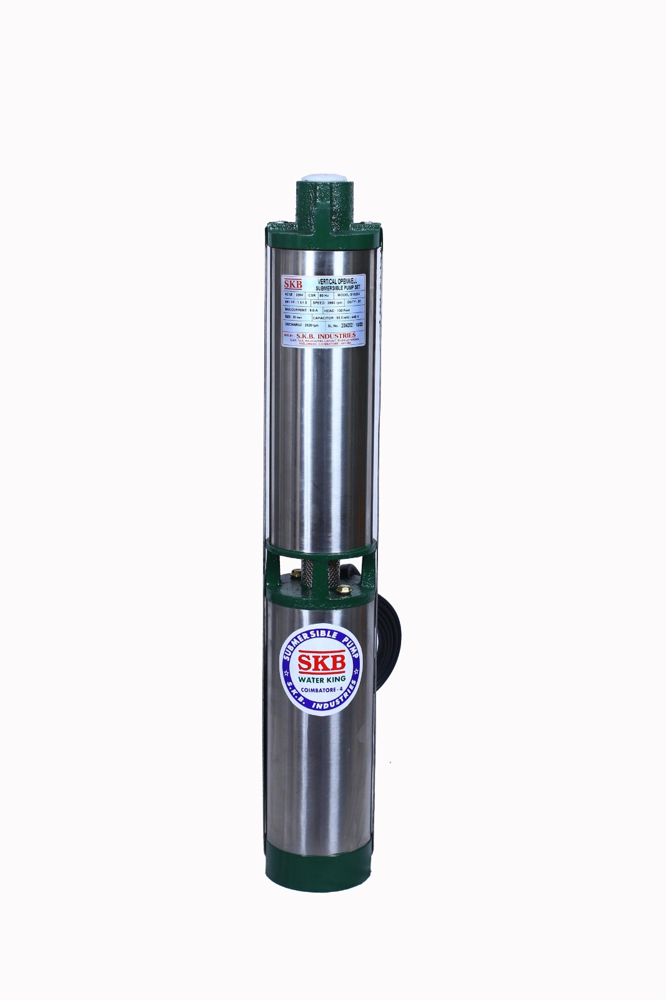
High-efficiency openwell submersible for hospitals, hotels, agriculture and housing complexes. Epoxy-coated internals for longer life.
Enquire Now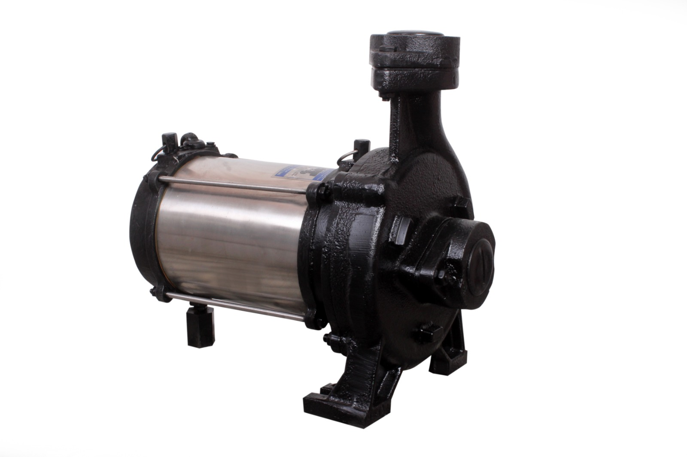
Heavy-duty three-phase openwell submersible pumps for large agricultural use, industries and water circulating systems.
Enquire Now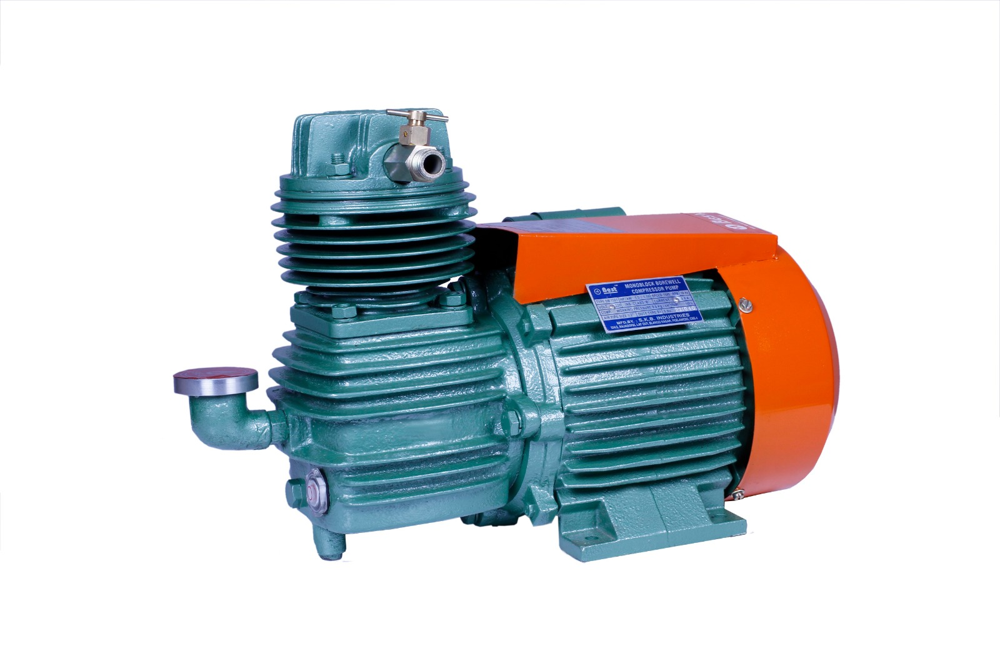
No.1 mono compressor pump for deep borewells. Air-lift principle. Available 1, 1.5, 2, 3, 5, 7.5 & 10 HP. Best "Sena Series".
Enquire Now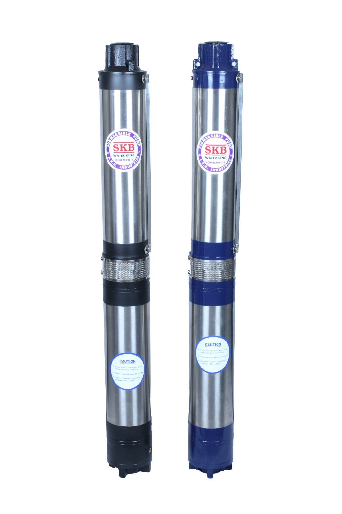
SKB Water King — precision balanced V4 borewell submersible. Radial flow and mixed flow models. Up to 620 ft head.
Enquire Now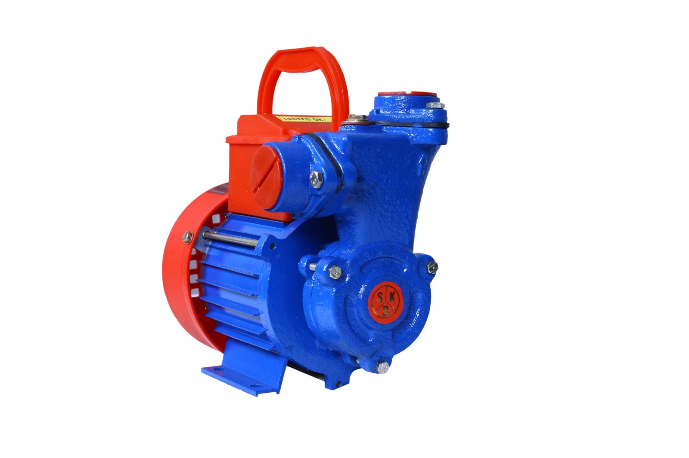
SS rotating parts, Danfoss KP35 pressure switch, thermal overload protection. Ideal for single bathroom pressure boosting.
Enquire Now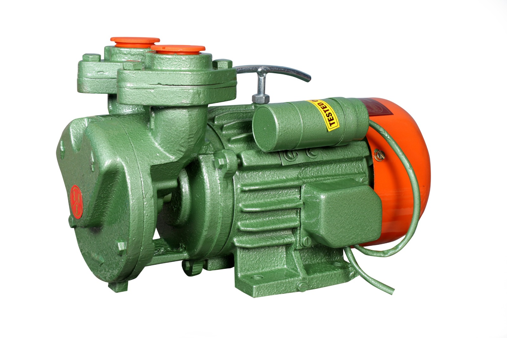
Complete multistage pump system with pressure tank (24L–300L). For 2–6 bathroom homes, hotels, villas and multi-storey buildings.
Enquire Now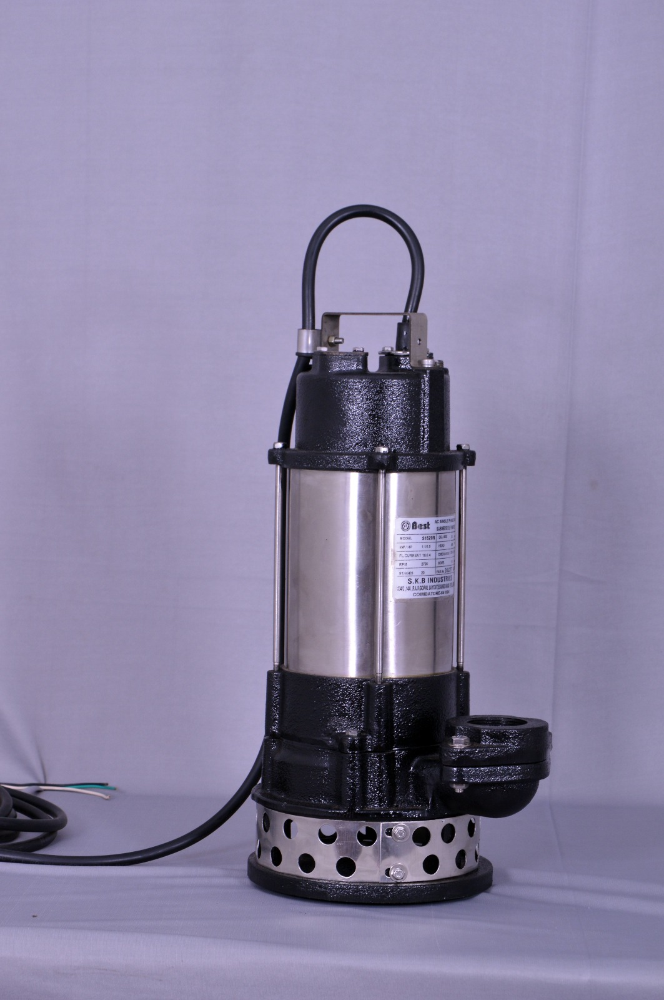
SenDra Series — for sewage treatment plants, mines, civil construction and dewatering. Cast iron pump + SS 304 motor body. IP68 rated.
Enquire Now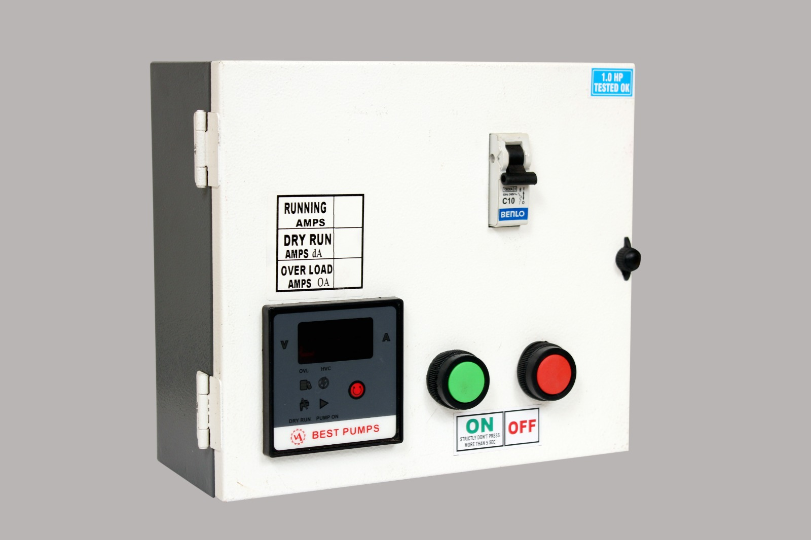
Smart pump starters with digital V/A display, dry-run protection, overload protection and MCB. Protects your pump investment.
Enquire Now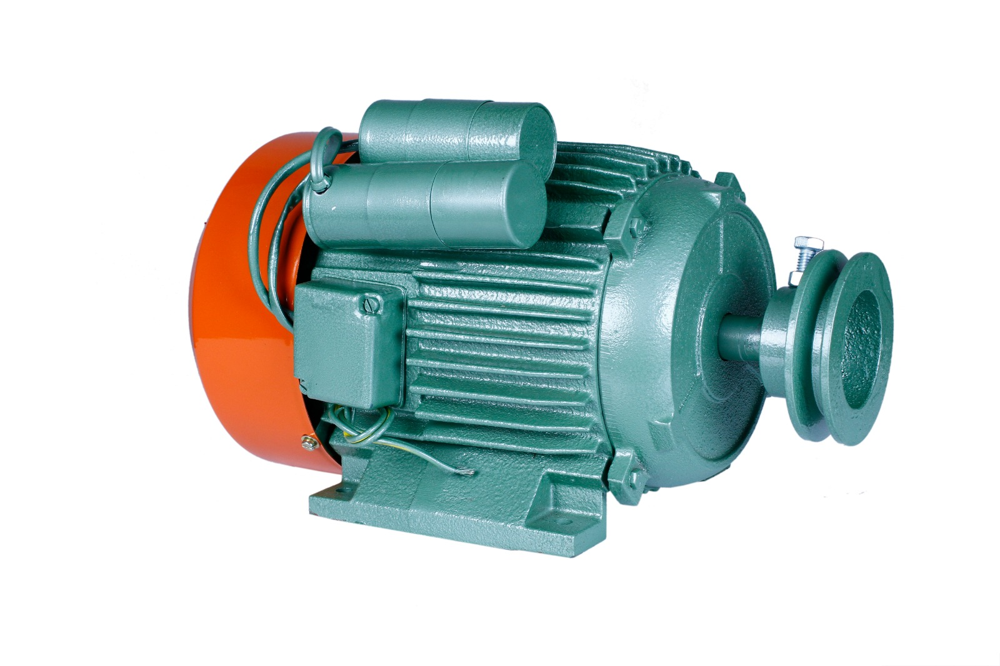
ISI marked standalone motors. 100% copper winding, dynamically balanced rotor, Class B insulation. Single and three phase.
Enquire NowCall our technical team — we'll help you choose the right pump for your depth, application and HP requirement.